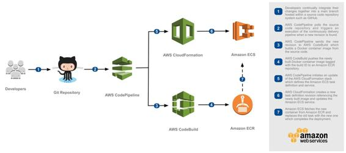

CI/CD for Amazon ECS (Docker containers)
Containers have revolutionized the software packaging aspects, by enabling the creation of lightweight, standalone, and executable packages of a piece of software that includes everything needed to run it: code, runtime, system tools, system libraries, and settings that can be deployed on various computing environments. Although there are multiple different types of container platforms, one of the most popular ones is Docker containers. Amazon offers the Amazon EC2 Container Service (ECS) and Amazon Elastic Container Service for Kubernetes (EKS) to deploy and manage Docker containers at scale and in a reliable fashion. Amazon ECS and Amazon EKS also integrate with various other AWS services such as Elastic Load Balancing, EBS volumes, and IAM roles to make the process of deploying various container-based applications even easier. Along with Amazon ECS and Amazon EKS, AWS also offers an Amazon EC2 Container Registry (ECR) to store, manage, and deploy Docker container images to an Amazon ECS-based environment.
In order to build a CI/CD workflow to deploy various application versions on to Amazon ECS, the following is a high-level workflow using services such as AWS CodePipeline, AWS CodeBuild, AWS CloudFormation, and Amazon ECR:
